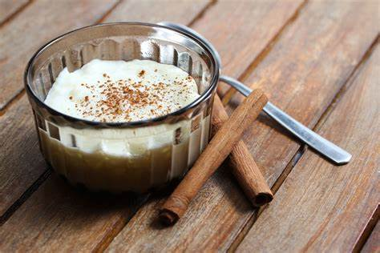

Comenzamos rayando el queso y reservamos en una tácita una cucharada
En un tazón agregamos la masa, la sal, el queso y mezclamos, luego agregamos el suero caliente y la natilla (reservamos un poco de la natilla para el relleno)
revolvemos bien hasta que quede una masa algo pegajosa (este es el secreto)
Cuando este lista la masa, tomamos un poco de la mezcla y la agregamos al queso su habíamos reservado (este será el relleno del bizcocho) agregamos la natilla y mezclamos.
Hacemos bolitas y formamos como empanaditas, le agregamos el relleno y cerramos
Enharinamos una bandeja de horno y los colocamos uno Pegadito al otro.
horneamos a 190° durante 50 minutos o hasta que estén doraditos y listo
Picadillo de chayote
Ingredientes
Zanahoria
Chayote
Carne molida
Maíz dulce
Elaboracion
Sofreír la carne con sal y pimienta al gusto
Picar la zanahoria y el chayote en cuadritos pequeños
Añadir la zanahoria y el chayote
Esperar a que suavicen
Añadir el maíz dulce
Acompañar con 1/2 taza de frijoles o arroz
Arroz con leche

Ingredientes
1 tz arroz
1/2 taza azúcar
2 tazas agua
1 lata leche condensada
1/2 lata crema dulce
3 tazas leche
1 cucharadita vainol
Palitos canela
Canela en polvo
Cáscara entera de limón
2 yemas
2 Claras
1 pizca sal
Elaboracion
Lavo el arroz, luego lo hiervo con las 2 tazas de agua y la pizca de sal hasta que reviente
Agrego las tazas de leche y la media taza de azúcar
Agrego media crema dulce y la lata de leche condensada, la cáscara de limón y el vainol
Bato las yemas y las revuelvo con un poco de la leche para que al contacto con el arroz no endurezca
Como paso final tomo las claras y las bato a un punto antes de crema chantilly, esto me hará una espuma blanca y la agrego a la mezcla del arroz
Sirvo y pongo un poquito de canela en polvo, algunos lo comen tibio recién hecho o frío una vez que se guarda en la refrigeradora y ahora si,